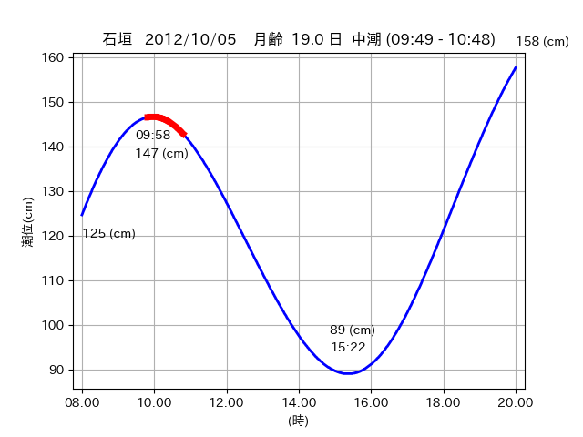

<!DOCTYPE html>
<html>
<head>
    
    <meta http-equiv="content-type" content="text/html; charset=UTF-8" />
    
        <script>
            L_NO_TOUCH = false;
            L_DISABLE_3D = false;
        </script>
    
    <style>html, body {width: 100%;height: 100%;margin: 0;padding: 0;}</style>
    <style>#map {position:absolute;top:0;bottom:0;right:0;left:0;}</style>
    <script src="https://cdn.jsdelivr.net/npm/leaflet@1.9.3/dist/leaflet.js"></script>
    <script src="https://code.jquery.com/jquery-3.7.1.min.js"></script>
    <script src="https://cdn.jsdelivr.net/npm/bootstrap@5.2.2/dist/js/bootstrap.bundle.min.js"></script>
    <script src="https://cdnjs.cloudflare.com/ajax/libs/Leaflet.awesome-markers/2.0.2/leaflet.awesome-markers.js"></script>
    <link rel="stylesheet" href="https://cdn.jsdelivr.net/npm/leaflet@1.9.3/dist/leaflet.css"/>
    <link rel="stylesheet" href="https://cdn.jsdelivr.net/npm/bootstrap@5.2.2/dist/css/bootstrap.min.css"/>
    <link rel="stylesheet" href="https://netdna.bootstrapcdn.com/bootstrap/3.0.0/css/bootstrap-glyphicons.css"/>
    <link rel="stylesheet" href="https://cdn.jsdelivr.net/npm/@fortawesome/fontawesome-free@6.2.0/css/all.min.css"/>
    <link rel="stylesheet" href="https://cdnjs.cloudflare.com/ajax/libs/Leaflet.awesome-markers/2.0.2/leaflet.awesome-markers.css"/>
    <link rel="stylesheet" href="https://cdn.jsdelivr.net/gh/python-visualization/folium/folium/templates/leaflet.awesome.rotate.min.css"/>
    
            <meta name="viewport" content="width=device-width,
                initial-scale=1.0, maximum-scale=1.0, user-scalable=no" />
            <style>
                #map_c3148d78982f85f24c7ac9c0eabc5d39 {
                    position: relative;
                    width: 2048.0px;
                    height: 1600.0px;
                    left: 0.0%;
                    top: 0.0%;
                }
                .leaflet-container { font-size: 1rem; }
            </style>
        
</head>
<body>
    
    
            <div class="folium-map" id="map_c3148d78982f85f24c7ac9c0eabc5d39" ></div>
        
</body>
<script>
    
    
            var map_c3148d78982f85f24c7ac9c0eabc5d39 = L.map(
                "map_c3148d78982f85f24c7ac9c0eabc5d39",
                {
                    center: [24.212, 124.005],
                    crs: L.CRS.EPSG3857,
                    ...{
  "zoom": 12,
  "zoomControl": true,
  "preferCanvas": false,
}

                }
            );

            

        
    
            var tile_layer_3d2a0e878c491ce1d411873661912726 = L.tileLayer(
                "https://cyberjapandata.gsi.go.jp/xyz/seamlessphoto/{z}/{x}/{y}.jpg",
                {
  "minZoom": 0,
  "maxZoom": 18,
  "maxNativeZoom": 18,
  "noWrap": false,
  "attribution": "\u5730\u7406\u9662\u5730\u56f3",
  "subdomains": "abc",
  "detectRetina": false,
  "tms": false,
  "opacity": 1,
}

            );
        
    
            tile_layer_3d2a0e878c491ce1d411873661912726.addTo(map_c3148d78982f85f24c7ac9c0eabc5d39);
        
    
            var marker_c708c38d1459bf5833143a4f3b6ef9e1 = L.marker(
                [24.2142, 123.943],
                {
}
            ).addTo(map_c3148d78982f85f24c7ac9c0eabc5d39);
        
    
            var icon_cc05d028b9c10f5e45fc92903471187a = L.AwesomeMarkers.icon(
                {
  "markerColor": "orange",
  "iconColor": "white",
  "icon": "info-sign",
  "prefix": "glyphicon",
  "extraClasses": "fa-rotate-0",
}
            );
        
    
        var popup_fa0a1c531e0d5d4f11ae249dc290deaa = L.popup({
  "maxWidth": "100%",
});

        
            
                var html_fa9f0ed91d762a9f61e5e877c835b028 = $(`<div id="html_fa9f0ed91d762a9f61e5e877c835b028" style="width: 100.0%; height: 100.0%;"><table><tr><td></td></tr><tr><td><center>20121005 No.1 </center></table></td></tr></table</div>`)[0];
                popup_fa0a1c531e0d5d4f11ae249dc290deaa.setContent(html_fa9f0ed91d762a9f61e5e877c835b028);
            
        

        marker_c708c38d1459bf5833143a4f3b6ef9e1.bindPopup(popup_fa0a1c531e0d5d4f11ae249dc290deaa)
        ;

        
    
    
                marker_c708c38d1459bf5833143a4f3b6ef9e1.setIcon(icon_cc05d028b9c10f5e45fc92903471187a);
            
    
            var poly_line_5fcc5989905564c2cc5a9716392d9dd5 = L.polyline(
                [[24.2142, 123.943], [24.1999, 123.9357]],
                {"bubblingMouseEvents": true, "color": "#00FFFF", "dashArray": null, "dashOffset": null, "fill": false, "fillColor": "#00FFFF", "fillOpacity": 0.2, "fillRule": "evenodd", "lineCap": "round", "lineJoin": "round", "noClip": false, "opacity": 1.0, "smoothFactor": 1.0, "stroke": true, "weight": 3}
            ).addTo(map_c3148d78982f85f24c7ac9c0eabc5d39);
        
    
            var marker_d13e6ab5f4032157a8318d1ea124c023 = L.marker(
                [24.2108, 124.0095],
                {
}
            ).addTo(map_c3148d78982f85f24c7ac9c0eabc5d39);
        
    
            var icon_bff36f803d4b6a9ac51cbfd5cdfe74a0 = L.AwesomeMarkers.icon(
                {
  "markerColor": "orange",
  "iconColor": "white",
  "icon": "info-sign",
  "prefix": "glyphicon",
  "extraClasses": "fa-rotate-0",
}
            );
        
    
        var popup_a671f044bd4e8f45ea1f9ded793f9d1a = L.popup({
  "maxWidth": "100%",
});

        
            
                var html_c767d6857ff4a3e2be5a23724181213e = $(`<div id="html_c767d6857ff4a3e2be5a23724181213e" style="width: 100.0%; height: 100.0%;"><table><tr><td></td></tr><tr><td><center>20121005 No.2 </center></table></td></tr></table</div>`)[0];
                popup_a671f044bd4e8f45ea1f9ded793f9d1a.setContent(html_c767d6857ff4a3e2be5a23724181213e);
            
        

        marker_d13e6ab5f4032157a8318d1ea124c023.bindPopup(popup_a671f044bd4e8f45ea1f9ded793f9d1a)
        ;

        
    
    
                marker_d13e6ab5f4032157a8318d1ea124c023.setIcon(icon_bff36f803d4b6a9ac51cbfd5cdfe74a0);
            
    
            var poly_line_4e771e6adef21fb3fbb29637143c86a6 = L.polyline(
                [[24.2108, 124.0095], [24.2112, 124.017]],
                {"bubblingMouseEvents": true, "color": "#FF00FF", "dashArray": null, "dashOffset": null, "fill": false, "fillColor": "#FF00FF", "fillOpacity": 0.2, "fillRule": "evenodd", "lineCap": "round", "lineJoin": "round", "noClip": false, "opacity": 1.0, "smoothFactor": 1.0, "stroke": true, "weight": 3}
            ).addTo(map_c3148d78982f85f24c7ac9c0eabc5d39);
        
    
            var marker_795d2e577a0f320fd744bb6c0f6b5097 = L.marker(
                [24.2141, 124.0017],
                {
}
            ).addTo(map_c3148d78982f85f24c7ac9c0eabc5d39);
        
    
            var icon_62ef63d18c47967fb26f23c4249696dc = L.AwesomeMarkers.icon(
                {
  "markerColor": "orange",
  "iconColor": "white",
  "icon": "info-sign",
  "prefix": "glyphicon",
  "extraClasses": "fa-rotate-0",
}
            );
        
    
        var popup_0ed9de18203916d25d5d91ada4e99a87 = L.popup({
  "maxWidth": "100%",
});

        
            
                var html_756c05ba615250d054e126ee624804be = $(`<div id="html_756c05ba615250d054e126ee624804be" style="width: 100.0%; height: 100.0%;"><table><tr><td></td></tr><tr><td><center>20121005 No.3 </center></table></td></tr></table</div>`)[0];
                popup_0ed9de18203916d25d5d91ada4e99a87.setContent(html_756c05ba615250d054e126ee624804be);
            
        

        marker_795d2e577a0f320fd744bb6c0f6b5097.bindPopup(popup_0ed9de18203916d25d5d91ada4e99a87)
        ;

        
    
    
                marker_795d2e577a0f320fd744bb6c0f6b5097.setIcon(icon_62ef63d18c47967fb26f23c4249696dc);
            
    
            var poly_line_827f2c02965a25014e03b72dc2a00bfd = L.polyline(
                [[24.2141, 124.0017], [24.2101, 124.0078]],
                {"bubblingMouseEvents": true, "color": "#00FFFF", "dashArray": null, "dashOffset": null, "fill": false, "fillColor": "#00FFFF", "fillOpacity": 0.2, "fillRule": "evenodd", "lineCap": "round", "lineJoin": "round", "noClip": false, "opacity": 1.0, "smoothFactor": 1.0, "stroke": true, "weight": 3}
            ).addTo(map_c3148d78982f85f24c7ac9c0eabc5d39);
        
</script>
</html>